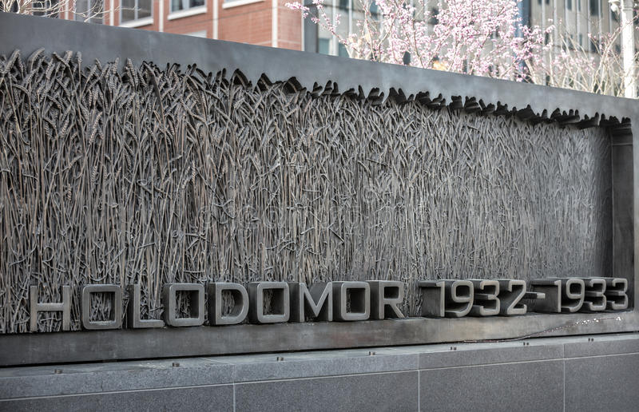
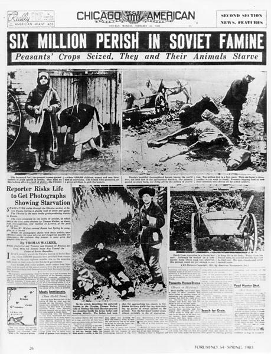

Ukraine can be referred to as the bread basket of Europe but in the early days of the Soviet Union the people there weren't having fantastic meals.The Holodomor a man made famine that occured in the Ukraine from 1932 - 1933 under various causes being dekulakization, five year plans, and surpressing Ukrainian rebels.Depending on the source 3 million to 6 million people died. There were also similar man made famines in the Ukraine which totaled to roughly 7 to 10 million Ukrainians total for dying at the hands of the Soviet regime. Though Stalin was the ruler of the Soviet Union at the time, the NKVD (Secret police) are the ones who organized the mass starvation specifically Lazar Kaganovich. Today only 16 countries recognize it as a genocide, a few of those countries being Australia, Canada, and Mexico. Offically Russia denies Ukraines view of the Holodomor and some even deny it happend with some calling it US government propaganda or anti Russian sentiment.
 